In the remainder of this chapter, the solution and postprocessing method just developed is used to investigate the floor and ceiling problems.
The understanding of vapour transport across gas-filled enclosures has been hampered by the large number of dimensionless parameters and possible flow regimes. Here, a conduction-diffusion regime is defined by the existence of a fully developed region, for which an analytic solution is available (ch. 4). Numerical solutions demonstrating the existence of the regime for a cavity of finite vertical aspect ratio are presented. The agreement between the numerical and analytic solutions gives mutual validation. The range of parameters over which the regime applies is investigated, with emphasis on the penetration of end-effects into the core. The functional dependence of the overall transfer rates on the vertical aspect ratio is also presented.
First, let us review the relevant literature.
There have been several previous investigations of vapour transport across gas-filled enclosures, as summarized in chapter 3. These studies have produced various formulae for the heat and mass transfer rates, but it is difficult to assess their domain of validity, given the large number of dimensionless governing parameters and the range of possible flow regimes, the principal divisions amongst which arise from the existence of turbulence, multiple cells and/or boundary layers.
A demarcation of regimes for strongly convective flows driven either
by heat ( ) or mass (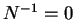) transfer with vanishingly dilute
vapours (
) or mass (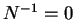) transfer with vanishingly dilute
vapours ( ) according to the relative magnitudes of the
Schmidt, Sc, and (reference) Prandtl,
) according to the relative magnitudes of the
Schmidt, Sc, and (reference) Prandtl,
 , numbers was made by
Bejan (1985;
§3.3.5).
These results were verified by Béghein et al. (1992;
§3.3.15),
but only for values of Sc and
, numbers was made by
Bejan (1985;
§3.3.5).
These results were verified by Béghein et al. (1992;
§3.3.15),
but only for values of Sc and
 much larger or smaller than unity. Unfortunately, for
gas-vapour mixtures, the diffusivities of momentum, temperature and
species are all of similar order of magnitude. Theoretically based
formulae for the heat and mass transfer rates have been developed
that are valid for Prandtl and Schmidt numbers near, but not
necessarily equal to, unity (McBain 1997b;
§3.3.16).
These latter formulae are based on a scale
analysis appropriate for boundary layer regimes, and so perform poorly
for flows where diffusive effects penetrate across the width of the
cavity.
much larger or smaller than unity. Unfortunately, for
gas-vapour mixtures, the diffusivities of momentum, temperature and
species are all of similar order of magnitude. Theoretically based
formulae for the heat and mass transfer rates have been developed
that are valid for Prandtl and Schmidt numbers near, but not
necessarily equal to, unity (McBain 1997b;
§3.3.16).
These latter formulae are based on a scale
analysis appropriate for boundary layer regimes, and so perform poorly
for flows where diffusive effects penetrate across the width of the
cavity.
In chapter 4, an analytic solution of the system of
governing equations was presented that is valid in the narrow cavity limit,
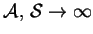. This solution is
analogous to that of Jones and Furry (1946);
i.e. equations (4.35)-(4.38)
with  ; for the single fluid
heat transfer problem (defined in §2.4).
Thus, this new solution can be taken to define a
`conduction-diffusion regime' for the nonisothermal vapour transport
problem, in the same way that Batchelor (1954) and Eckert and
Carlson (1961)
defined a conduction regime for the heat transfer problem,
as that in which the one-dimensional profiles
occur over at least some section of the height of the cavity.
; for the single fluid
heat transfer problem (defined in §2.4).
Thus, this new solution can be taken to define a
`conduction-diffusion regime' for the nonisothermal vapour transport
problem, in the same way that Batchelor (1954) and Eckert and
Carlson (1961)
defined a conduction regime for the heat transfer problem,
as that in which the one-dimensional profiles
occur over at least some section of the height of the cavity.
One of the present purposes is to demonstrate numerically that the conduction-diffusion regime can exist in a two-dimensional cavity of finite vertical aspect ratio. Previously the only evidence was the qualitative assertion of Jhaveri et al. (1981) for a case of isothermal mass transfer; 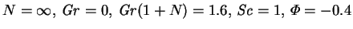 and 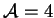; that the flow was essentially one-dimensional, except adjacent to the horizontal walls. Demonstrating the existence of the regime also simultaneously validates the former analytic and present finite element solutions.
A second desirable purpose would be to determine the range of the
dimensionless parameters for which the regime exists, but this is
difficult for two reasons. Firstly, the large number of governing
parameters makes an exhaustive set of numerical experiments prohibitively
expensive; there are seven parameters in the present model
compared with three for the pure fluid problem: Gr, Pr and  .
Secondly, there may be several
mechanisms which can lead to the destruction of the regime.
According to Daniels (1985),
the pure fluid conduction regime can break down in three ways:
.
Secondly, there may be several
mechanisms which can lead to the destruction of the regime.
According to Daniels (1985),
the pure fluid conduction regime can break down in three ways:
The travelling wave instability, in the pure fluid case, occurs only for large Prandtl numbers so that it should not be relevant for gas-vapour mixtures. The minimum Prandtl number is given as 11.4 by Gershuni and Zhukhovitskii (1976, p. 276), and 12.7 by Bergholz (1978).
A proper consideration of the second mechanism
would require reference to the unsteady equations
(Cleary 1995a);
the numerical model developed in §§5.1 - 5.3
treats only the stationary forms of the equations.
Linear stability analysis of the pure fluid problem predicts the appearance
multiple rolls if the Grashof number exceeds a critical value
weakly dependent on the Prandtl number. It decreases from its
zero Prandtl number limit of 7932
(Korpela, Gözüm & Baxi 1973)
to 7349.516 at
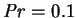, then increases to 8093.723 at
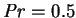, decreases again to 7848.831 at
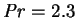 and slowly
increases thereafter, the value at
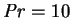 being 7870.43 (Ruth 1979).
The discrepancy between the theoretical value, 8038, at
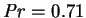 (Korpela et
al. 1973) and Hollands and Konicek's (1973) experimental value of 11 000
for air was ascribed by Lee and Korpela (1983) to the stabilizing effect of the
slight positive vertical temperature gradient resulting from the finite
vertical aspect ratio of the physical cavity.
In the absence of knowledge of the effect of
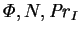 or Sc on the
critical Grashof number, the parameters for this study were chosen so that
the combined Grashof number,
 , was considerably less than 8000.
, was considerably less than 8000.
Even if consideration is restricted to the third mechanism, the problem
has not yet been solved conclusively even for pure heat transfer.
Some authors have asserted
that the conduction regime exists below a certain fixed Rayleigh number,
giving values between 1500 and 3000 (Vest & Arpaci 1969; Dixon & Probert
1975; Gebhart et al. 1988, p. 730).
The analyses of Batchelor (1954), Patterson and Imberger (1980),
and Daniels (1985), on the other hand, suggest that the
maximum Rayleigh number is proportional to the vertical aspect ratio.
The boundary drawn on the Ra- plane by Eckert and Carlson (1961),
based on their experimental results,
gives a one-third power dependence on
plane by Eckert and Carlson (1961),
based on their experimental results,
gives a one-third power dependence on  .
Though intermediate, this conclusion must be treated with some
caution, since the sparsity of the experimental data points allowed
Dixon and Probert to draw, just as plausibly, their vertical line.
.
Though intermediate, this conclusion must be treated with some
caution, since the sparsity of the experimental data points allowed
Dixon and Probert to draw, just as plausibly, their vertical line.